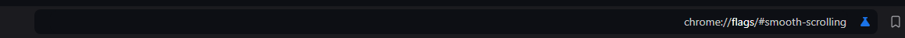
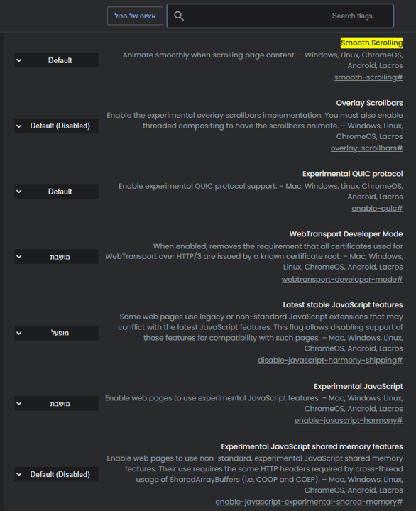

אפשרויות, פיצ'רים והגדרות
גלילה חלקה [פיצ'ר] לא עובד/ת?
להלן מדריך שיכול לעזור במידה והאפשרות / הפיצ'ר גלילה חלקה לא עובד/ת...
נחפש בשורת החיפוש בדפדפן למעלה את הכתובת הבאה:
chrome://flags/#smooth-scrolling ונלחץ על מקש ה-Enter.
שם נשנה את הערך של האפשרות המודגשת מ - Default או
Disabled ל - Enabled ונפעיל מחדש את הדפדפן.
אחרי הפעלת הדפדפן מחדש האפשרות גלילה חלקה תהיה מופעלת והדפדפן יתמוך באתרים
שמשתמשים בה.
הסבר עם תמונות:
נחפש
chrome://flags/#smooth-scrolling בשורת החיפוש.

כעת יפתח לנו החלון הבא:

Next we will click the on the dropdown next to נלחץ על הרשימה מצד האפשרות
גלילה חלקה ונבחר באפשרות Enabled :
הודעה קופצת תופיע אשר מודיעה לנו שהשינויים שביצענו יבואו לידי ביטוי בפעם הבאה
שנפעיל מחדש את הדפדפן, עם אפשרות להפעיל מחדש את הדפדפן.
נלחץ על הכפתור הפעלה מחדש
(נשמור דברים חשובים פתוחים לפני כן ליתר ביטחון).

עכשיו הפיצ'ר הזה פעיל בדפדפן שלנו והוא אמור לעבוד בכל דפדפן אשר משתמש בו.